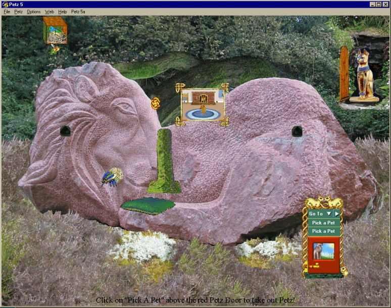
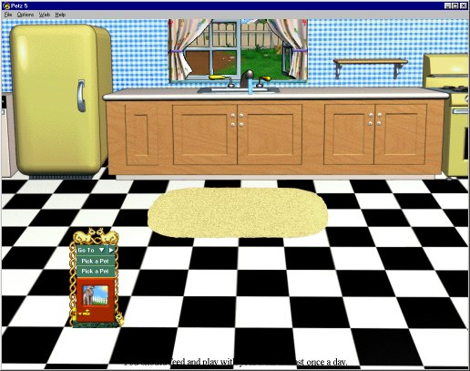
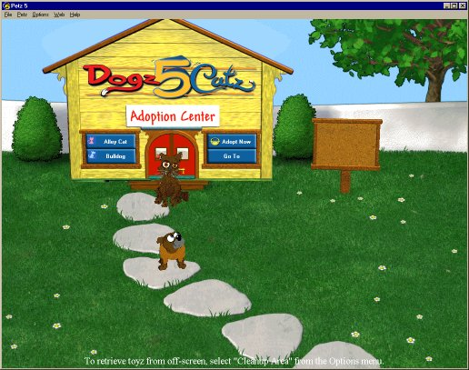
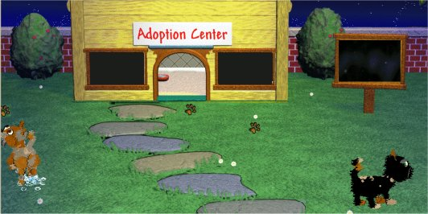

Petz 5 Playscenes
Click picture or name to download.
This page contains any playscenes that I may hex for the Petz 5 game; I don't make scenes with the game's editor, because there are people who make much better ones that way than I can, but on occasion I may want to alter one of the game's original scenes. When I do, I'll post it here.
The Petz 5 version of the Secret Wood is now available complete for you to download. It will look best if you
download the carrycase Skin from my skins page, and the toyz -- and I strongly
recommend that you download the sounds also. Click on various things, such as the knot-hole by the lion's nose,
for some little surprises, and have fun with the birdie-house and Scarab (dung-beetle). You can pick them up and
move them around the place. The beetle does a dung-beetle's job of clearing up dirt, and the birdie-house keeps
time for you. Oh, and there is a shelf in the bower above the Lion.
I hope you enjoy this scene and find it
as magical as I do.

The Secret Wood
/
Sounds for Secret
Wood
Secret Wood
special toyz

Petz 5 kitchen with Petz 4 backdrop
Updated Oct 2003 to stay like Petz 4 at night-time also

Petz 5 Adoption Centre with Petz 4 backdrop
This is actually an easy-edit kit, so take care to follow the included instructions. I have made the backdrops
256-colour to make a smaller download, and I have altered the daytime backdrop to the Petz 3 or Petz 4 one for
nostalgia freaks like myself. If you want the Adoption Centre birdsong, download this file.

Petz 5 AdoptionGone Editor-created playscene
This is my one and only Editor-created playscene, which is really my test scene created to see what could and
couldn't be done with the Editor. I thought it turned out kind of fun, so here it is :-)